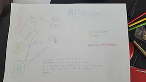
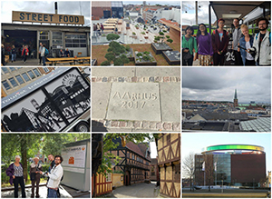
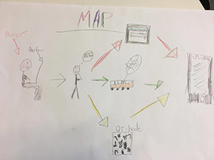

Den første case handlede om at finde en kunde hvor vi kunne skabe et relevant medie produkt til dem igennem research af kundens brugere. Vi skulle slutte projektet af med at præsentere hvad vi havde lavet til en fernisering.
Vi valgte at vores kunde skulle være VisitAarhus. Da VisitAarhus har en rimelig central rolle i Aarhus som kulturhovedstad synes vi at det kunne være en spændende kunde. Vi brugte metoden sprint til projektet.
Forprojekt
Vi startede Case 1 ud med at lave en problemformulering og spørgsmål til opgaven. Jeg følte at en problemformulering var vigtig fordi at VisitAarhus som sådan ikke sælger et fysisk produkt. VisitAarhus ”sælger” god service til turister som kommer til byen. Derfor var det vigtigt at få en god problemformulering ind, så vi kunne vinkle opgaven på den rigtige måde. Den værdi som VisitAarhus leverer til sine brugere er jo god service og information. Vores problem og mål blev så at identificere hvad god service var og hvad mangler som VisitAarhus har.
Vi gik så videre til at definere hvad vores målgrupper var, vi sad alle og snakkede om det og fik tegnet den her oversigt

Vi blev hurtige enige om at målgruppen var turister, jeg kom med forslaget om at dele vores målgruppe op i subgrupper; unge, gamle og familier. Også definerede vi hvad deres foretrukne kilde var. Vores kilder er defineret som enten Analog eller digital. Da vores hovedinteresse var at udvikle et digitalt produkt var vi meget interesseret i den unge subgruppe og familie-subgruppen. Da vi vurderede at de 2 grupper nemmest vil gribe til vores digitale løsning. Vi tænkte dog også meget hvad vi kunne gøre analogt.
Vi formulerede så spørgsmålene ud fra den problemformulering. Jeg synes egentlig det var den rigtige måde at gøre det på. Men jeg kunne godt forestille at man også kunne gøre det omvendt, hvor man gik ud og stillede brugerne spørgsmål og derefter lavede en problemformulering ud fra svarene.
Research
Men vi tog ud og interviewede turister i Aarhus. Det var ret svært at komme i kontakt med dem. Men da det endelige skete fik vi også interviewede dem. Jeg lærte at det er vigtigt at få en god samtale op og køre med brugerne imens interviewet foregik. Man kunne ikke bare køre spørgsmålene ud i et. Vi lærte under vores interviews at spørgsmålene rimelige vigtige og at man nærmest skal køre 2 grene af spørgsmål. For hvis vi spurgte en turist om de havde hørt om Visitaarhus og de så sagde nej, så var vi så langt og resten af spørgsmålene blev ligegyldige. Men det vi så kunne konkludere ud fra de spørgsmål var at VisitAarhus ikke havde særlig meget synlighed.

Vi transkriberet derefter alle vores interviews og lavede vores brugerprofiler. Jeg så det lidt som et møjsommeligt arbejde og må indrømme at jeg langt bedre kan se anvendelsen i kvalitative dataindsamlinger.
Sprint
Så startede vi med sprint hvor vi den første dag besluttede hvem vores vigtigste målgruppe var og det var som tidligere skrevet Turister. Vi lavede så en map over brugerens ”rejse” til vores app. Det var en brugbar måde at finde på nye måder at skabe værdi for vores brugere. Her er den map vi lavede
